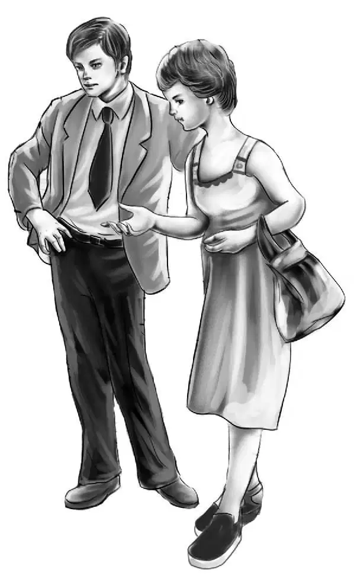
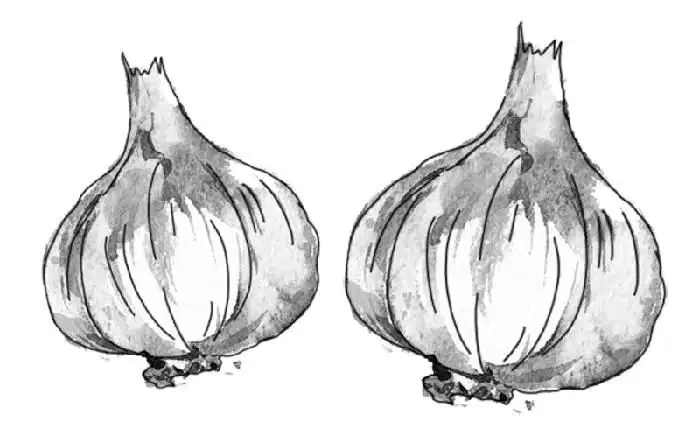
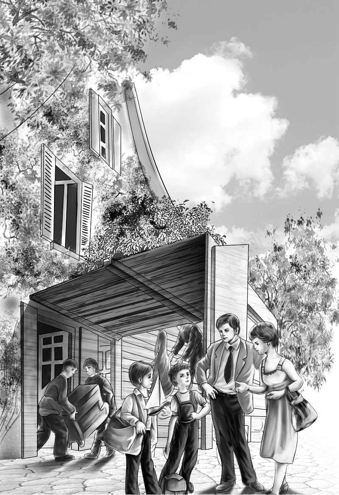
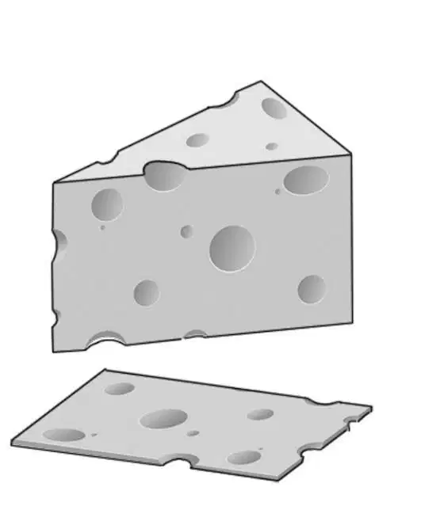

One afternoon in early July Benny Alden came in the front door and rushed down the hall to the stairs.
“Hey, Henry!” he shouted. “Jessie! Violet!”
“What’s the matter, Ben?” said a quiet voice. Henry stood at the top of the stairs. He looked down at his younger brother. “What’s all the fuss?”
“Somebody’s moving in next door! Imagine having neighbors!” Benny went on. “I can’t remember anyone ever living there. And that’s odd, too, because the house is so near the beach.”
“Grandfather always calls it the beach house,” Violet said. “I always thought people used to spend summers there.”
“Well, there’s a family there now,” Benny said. “There are two boys, only I wish they were a little older.”
“My, that house has been empty so long,” said Jessie Alden. She stood beside Henry at the top of the stairs. “Who are they, Ben?”
“I don’t know,” answered Benny. “They’re strangers.”
“Oh, what do they look like?” Violet asked.
“You can see for yourself. Go and look out of Grandfather’s bedroom window.”
Grandfather Alden had gone to work, so his room was empty.
Benny raced upstairs to Mr. Alden’s room, and Violet, Henry, and Jessie followed.
The next house was really not very near. The Alden place, after all, was quite big. There was a large lawn and a rose garden, and some woods between it and the house next door. That house, too, had many trees around it.
The Aldens could see a mover’s truck in front of the house that had been empty. Four men were going into the house with furniture, and right by the truck stood a man and a woman and two boys.
Benny raised the screen and put his head out of the window.
“You can’t make them hear you, Benny,” said Jessie.
“Well, I’m going to try,” replied Benny. “Yoo-hoo, welcome!” he shouted.
The strangers looked up. The boys began to smile and wave when they saw the four Aldens. The mother and father were not as quick to smile. Benny thought, “They act as if they don’t want anyone to notice they are moving in.”
While the boys waved the man called, “Thank you!” Then he did smile and began to walk toward the Alden house. The boys followed him. “Our name is Beach,” he called. “We are going to be your new neighbors.”
“That’s good,” answered Jessie. “That house has been empty too long.”
Mr. Beach said, “This is Jeffrey, and this is Sammy. I’m sure they will like living here.”
Jessie smiled at the boys. She said, “Hello, boys. You know, everyone calls your house the beach house. We thought it was because it was a summer place so near the beach. But it is your name, isn’t it? ”
“Yes, just the way your house is the Alden house,” said Jeffrey. He was the older of the two boys.
“Oh, you know our name?” said Benny.
The boys looked at their father. Mr.Beach said, “Oh, everyone knows the Alden place.”
The Aldens thought, “He acts as if he has known the Alden place for a long time. Maybe he isn’t such a stranger after all.”
Benny said, “I’ll be over sometime when you get settled. Then we can get acquainted.”
“Come any time,” replied Mr. Beach, starting back. The Aldens noticed that Mrs. Beach had not said a word.
As the Beach family went into their new house, Violet said, “I have an idea.”
The others looked at her because Violet’s ideas were always good.
She said, “Mrs. Beach will be too tired to get supper, so let’s send their supper over to them.”
Nobody said a word. The Aldens looked at each other. Then they turned and went to the kitchen, all smiling.
Mrs. McGregor was the housekeeper and cook. She had been with the Aldens for many years and she loved them all. Now Mrs. McGregor was sitting in her big rocking chair in the kitchen, with her cat on her lap.
Jessie began, “Oh, Mrs. McGregor, we’d like to cook some supper for our new neighbors. The Beach family is moving in right now. There are four of them. Could we make a casserole? ”
“Why not?” asked Mrs. McGregor, smiling. “I’ll sit and watch you work.”
That was what the Alden children liked best. They liked to work without any help, and Mrs. McGregor knew it well.
Everyone began to work. Benny opened cans of tomato soup. Henry peeled onions and cut them up. Violet got out some hamburger and began to break it up to cook in a pan. Jessie cooked macaroni and got out the cheese.
When all the things were cooked, Jessie put them together in a big dish and covered the top with cheese. She put it in the oven to bake.
Mrs. McGregor waited until Jessie had closed the oven door. Then she said, “Did you say a Beach family is moving in next door? I’ve been sitting here thinking about that old house. I haven’t been in it for years.”
“But you were in it once?” Benny asked.
“Yes,” Mrs. McGregor said. “I must have been quite little because everything seemed huge to me. Let’s see, I was invited there for a birthday party.”
“That sounds like fun,” Violet said. “Then theremust have been a family with children there.”
“No,” Mrs. McGregor said. “That’s the odd part about it. I’m sure this was special. An old lady lived there, I remember that. Even when I was little I thought it was sad that there was that great big house and just an old lady in it. Oh, I wish I could remember more.”

The Aldens kept quiet while Mrs. McGregor rocked back and forth. At last she shook her head. “No, I can’t remember anything else except that somebody got a little hunting horn. I remember a little boy with a great big sailor collar with ruffles. Maybe the horn was a birthday present.”
“What happened to the old lady?” asked Jessie.
“I don’t remember,” Mrs. McGregor said. “My family moved out of town and we lived on a farm. Since your grandfather has been here, nobody has lived in the house. I know that much.”
Benny said, “I guess the house always seemed a little spooky with all those big trees around it.”
Jessie said, “Most of the time we don’t think about the house being there at all. It’s been empty so long.”
“I like to think about two boys being there now,” Benny said. “Can we take them some dessert?”
Mrs. McGregor said, “You can take four of my orange puddings. I made a dozen.”
“Oh, thank you,” said Violet. “That’s wonderful.”
So that was how the Beach family had their first supper as neighbors to the Alden family. It was true that Mrs. Beach was tired from moving and was glad to see a meal brought in by four smiling children.
A few days later Jessie was looking at the Greenfield News.“Here’s something about our neighbors,” she said.
“What is it? ” asked Henry. “It seems funny that we have to find out about them by reading a newspaper.”
Jessie read the news story aloud. It said that
Mr. and Mrs. John Beach had moved into the house next to that owned by Mr. James Henry Alden. It also told that Mr. Beach was a scientist for the new Greenfield Chemical Company.
“Let me see,” Benny said. Then he sounded disappointed. “It doesn’t say anything at all about two boys in the family. I guess they don’t count.”
“I think we had better go over and call on our new neighbors,” Mr. Alden said.

Benny said, “We’d better go in the evening. The mother and father go out every day. I guess they work.”
“You see a lot, Ben,” Jessie told him.“You must spend a lot of time looking out the window.”
“No,” Benny said. “I just happened to see the Beaches get in their car and drive off in the morning. Then I happened to see them when they came home in the afternoon.”
Grandfather and the others laughed at Benny. They walked over to the house next door and rang the bell.
Mr.Beach came to the door and asked the Aldens to come in. The Beaches were all at home.
Mr. Beach was a tall thin man with very dark eyes and brown hair. He went back and sat down at his desk. He took off his glasses and said, “You were kind to cook that supper for us. My wife was very tired from moving.”
Mrs. Beach said, “How do you do, Mr. Alden? Yes, I was tired. I didn’t enjoy moving.”
“The boys loved the casserole,” Mr. Beach said suddenly.“They like all kinds of spaghetti and macaroni. They liked the dessert, too. And so did I.”
Mrs.Beach said nothing else, and the two boys did not say a single word.
Mr. Beach was shy and uneasy,and Mrs. Beach acted as if she were thinking of something else. Even Benny found it hard to talk to the new neighbors. Nobody seemed interested in what he had to say.
“We really have a big dog,” said Benny. “His name is Watch, but he isn’t here this summer. My Aunt Jane wanted him on the farm.”
Nobody said a word. They just looked at him.
Poor Benny. He tried again. “You’d like our dog. He’s a nice, gentle dog.”
Mr. and Mrs. Beach just nodded politely.
At last the Aldens went home. “They aren’t very friendly,” said Jessie, as they opened their own door.
“I agree with Jessie,” said Benny.
After that, nothing happened. Nothing at all.

One day Benny said, “I’d never know we had any neighbors. They certainly aren’t friendly. We asked them to come and see us, but they didn’t even say they would. And they haven’t.”
Even Grandfather Alden said,“It seems strange to me, too, Benny. We don’t want to bother them if they don’t want to be friends.”
“It’s too bad,” Jessie said.“We thought it would be nice to have neighbors at last.”
Henry nodded at his sister. “I guess we go our way, and they go their way.”
So that’s how it was.No new friends.No neighbors. Nothing at all.